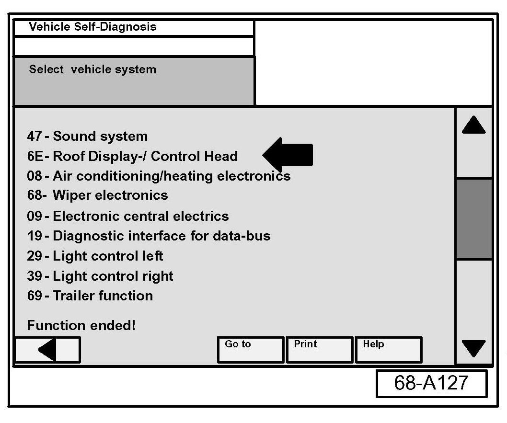
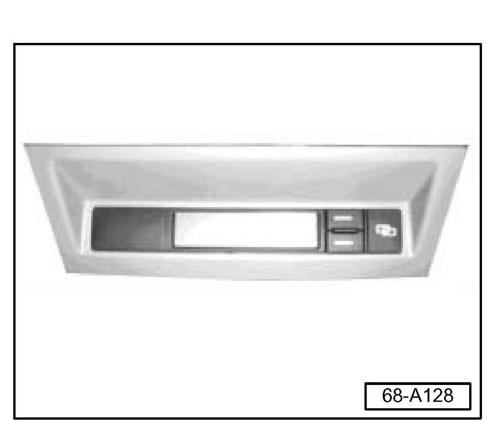
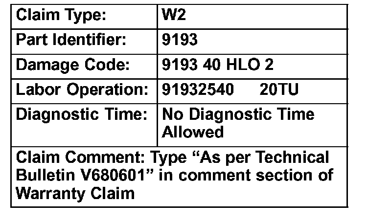

Instruments - Roof Display Module Flickers at Night
Group: 68Number: 06-01
Date: Feb. 22, 2006
Subject:
Backlight, Inconsistent Roof Display Module -J702-
Operation
Model(s):
Touareg 2004 --> 2005 Up to VIN: 7L_5D019273
Condition
Customer states that the roof display module -J702- flickers or flashes with backlight on at night.
Note:
Compass Control module in rear headliner Does Not have any interaction with backlighting function of this display
Service

- Scan diagnostic address 6E: Roof Display/Control Head through vehicle self diagnosis.
^ If software level is at or above 538:
- Further diagnosis is needed.
^ If software level is less than 538:

- Replace the overhead display with Part No. 7L6 919 044, suffix K/J or L. See repair manual Group 91 Radio, Telephone, Navigation, Trip computer, Roof Display Module -J702- removing and installing.
Tip:
Due to the many variations of the part, order replacement based on VIN.
Part numbers listed in this bulletin are for reference only Always check with your Parts Dept. for the latest parts information.

When procedure applies to vehicles with 1 in the New Vehicle Limited Warranty, use the table.